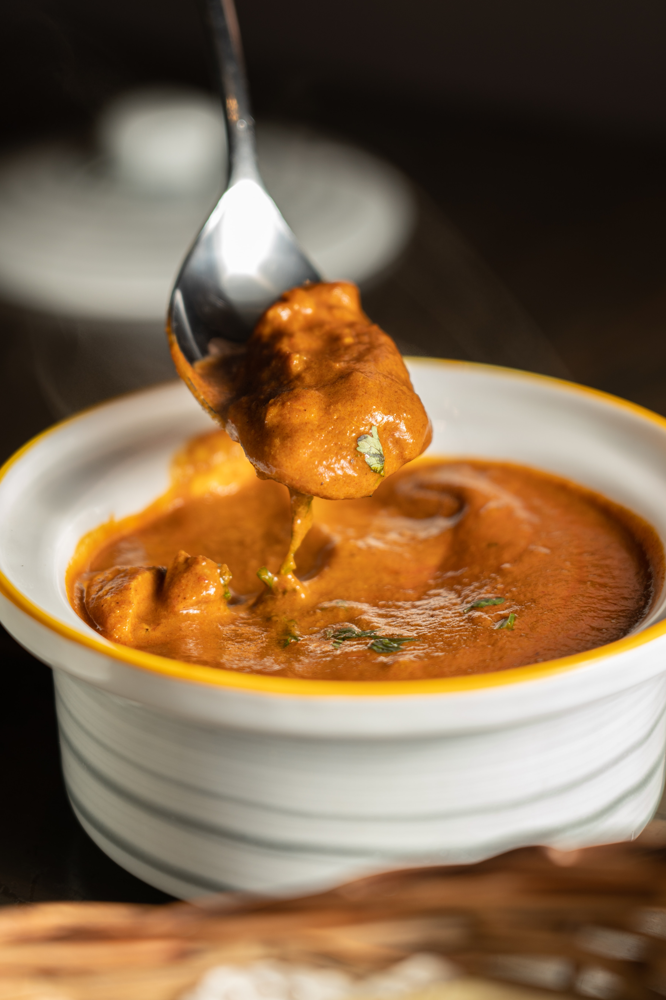

식용유 1/4컵(35g) 넣고 돼지 비계부분 먼저 볶기
노릇노릇 튀겨지듯이 익으면 살코기(300g)넣고 볶기
-기름에 거의 튀기듯이해서 풍미가 좋아진다.
갈색 가까울 때 양파 2개(하나 더 넣어도 됨)(500g) 넣기
-센불에 물이 안 나오도록 볶기
-양파를 카라멜라이징하면 좋은데 그건 에너지소모가 많이 든다.
양파가 갈색 비슷하게 나오면 당근 1/4개(67g)
진간장 2큰술(20g) 팬 가장자리쪽으로
-끓여주는 것
케첩 2큰술(3,4큰술도 넣어도 됨)(40g)
-볶아서 새콤한 맛을 날린다
잘못면 눌겠다 싶을 때 물10컵(1.8L)
-물은 날라갈 것까지 계산한 양
15분 이상 끓여주기
카레가루 상황에 맞춰가며 넣어주기
마지막에 버터2큰술 (20g)
